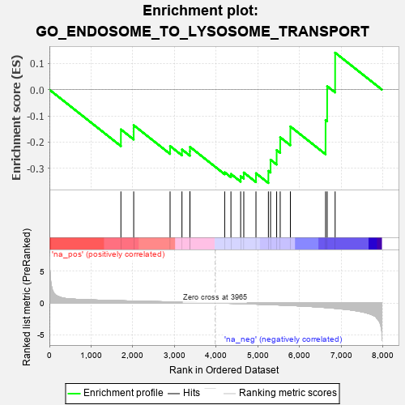
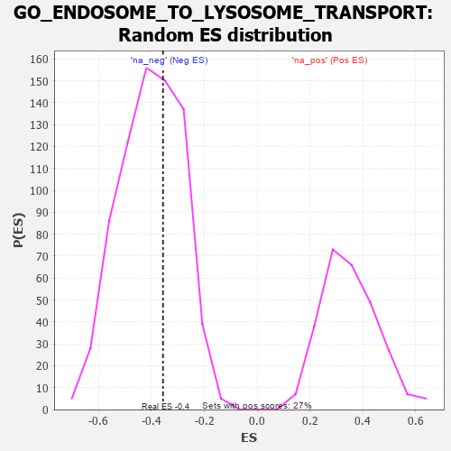

| | | Dataset | 7d |
| Phenotype | NoPhenotypeAvailable |
| Upregulated in class | na_neg |
| GeneSet | GO_ENDOSOME_TO_LYSOSOME_TRANSPORT |
| Enrichment Score (ES) | -0.35639057 |
| Normalized Enrichment Score (NES) | -0.8843183 |
| Nominal p-value | 0.6208791 |
| FDR q-value | 0.9608793 |
| FWER p-Value | 1.0 |
Table: GSEA Results Summary

Fig 1: Enrichment plot: GO_ENDOSOME_TO_LYSOSOME_TRANSPORT
Profile of the Running ES Score & Positions of GeneSet Members on the Rank Ordered List
| PROBE | GENE SYMBOL | GENE_TITLE | RANK IN GENE LIST | RANK METRIC SCORE | RUNNING ES | CORE ENRICHMENT | | 1 | TRAK1 | | | 1714 | 0.354 | -0.1518 | No |
| 2 | UBXN6 | | | 2021 | 0.302 | -0.1359 | No |
| 3 | MTM1 | | | 2893 | 0.168 | -0.2152 | No |
| 4 | AKTIP | | | 3178 | 0.125 | -0.2283 | No |
| 5 | EPG5 | | | 3368 | 0.094 | -0.2352 | No |
| 6 | VPS16 | | | 3370 | 0.093 | -0.2185 | No |
| 7 | VPS11 | | | 4202 | -0.041 | -0.3155 | No |
| 8 | ADRB2 | | | 4352 | -0.068 | -0.3220 | No |
| 9 | SNX27 | | | 4585 | -0.115 | -0.3303 | Yes |
| 10 | CHMP3 | | | 4660 | -0.129 | -0.3164 | Yes |
| 11 | CHMP5 | | | 4952 | -0.188 | -0.3190 | Yes |
| 12 | MGRN1 | | | 5250 | -0.257 | -0.3100 | Yes |
| 13 | RAB7A | | | 5302 | -0.271 | -0.2676 | Yes |
| 14 | LYST | | | 5448 | -0.307 | -0.2306 | Yes |
| 15 | VPS39 | | | 5533 | -0.329 | -0.1819 | Yes |
| 16 | VAMP7 | | | 5777 | -0.399 | -0.1406 | Yes |
| 17 | SCYL2 | | | 6621 | -0.724 | -0.1161 | Yes |
| 18 | VPS18 | | | 6659 | -0.743 | 0.0132 | Yes |
| 19 | VPS41 | | | 6850 | -0.841 | 0.1410 | Yes |
Table: GSEA details [plain text format]

Fig 2: GO_ENDOSOME_TO_LYSOSOME_TRANSPORT: Random ES distribution
Gene set null distribution of ES for GO_ENDOSOME_TO_LYSOSOME_TRANSPORT